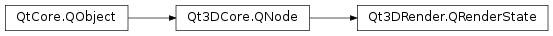

Qt3DRender.QRenderState¶
Inherited by: Qt3DRender.QMultiSampleAntiAliasing, Qt3DRender.QNoDepthMask, Qt3DRender.QSeamlessCubemap, Qt3DRender.QAlphaCoverage, Qt3DRender.QAlphaTest, Qt3DRender.QStencilMask, Qt3DRender.QBlendEquation, Qt3DRender.QBlendEquationArguments, Qt3DRender.QLineWidth, Qt3DRender.QClipPlane, Qt3DRender.QColorMask, Qt3DRender.QScissorTest, Qt3DRender.QFrontFace, Qt3DRender.QPolygonOffset, Qt3DRender.QCullFace, Qt3DRender.QDepthTest, Qt3DRender.QDithering, Qt3DRender.QStencilOperation, Qt3DRender.QStencilTest, Qt3DRender.QPointSize
Detailed Description¶
An abstract base class for all render states
A
Qt3DRender.QRenderStateclass is abstract base class for all render states. One can not instantiateQRenderStatedirectly, but through its subclasses.
© 2018 The Qt Company Ltd. Documentation contributions included herein are the copyrights of their respective owners. The documentation provided herein is licensed under the terms of the GNU Free Documentation License version 1.3 as published by the Free Software Foundation. Qt and respective logos are trademarks of The Qt Company Ltd. in Finland and/or other countries worldwide. All other trademarks are property of their respective owners.